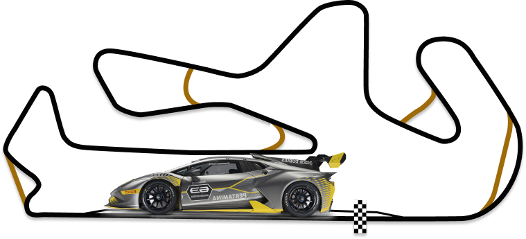

LAMBORGHINI SUPER TROFEO
Гранд-финал 2022 3-6 ноября
автодром Портимао,Португалия
СУПЕР ТРОФЕО МИРОВОЙ ФИНАЛ
Мировой финал Lamborghini завершает каждый сезон Super Trofeo с 2013 года. Каждый год гонщики всех континентальных чемпионатов отправляются на разные трассы и принимают участие в двух 50-минутных спринтерских гонках, где определяется победитель в общем зачете. как чемпион мира Lamborghini. Мировой финал Lamborghini — это не только крупнейший гоночный уик-энд года, но и настоящий фестиваль автоспорта, который привлекает поклонников со всего мира.
Парад владельцев, превью и развлечения в паддоке для болельщиков — это лишь некоторые из мероприятий, организованных в рамках мероприятия.
КОМАНДЫ СУПЕР ТРОФЕО
Все автомобили, которые участвуют в чемпионатах Lamborghini Super Trofeo, управляются частными командами, которые используют свой опыт для тонкой настройки их для водителей. Для каждого континентального чемпионата Lamborghini Super Trofeo существуют рейтинги пилотов и команд.
Пилоты и команды, участвующие в континентальной серии, каждый год соревнуются друг с другом в Гранд Финале Lamborghini, мероприятии, которое завершает спортивный сезон Super Trofeo. Две квалификационные сессии и две гонки определяют чемпионов мира серии. Каждый год Гранд-финал проводится на разных трассах, и в прошлых выпусках он уже затрагивал европейский, азиатский и американский континенты.

календарь сезона Super Trofeo Europe 2022 года
14 в истории серии GT, посвященный автомобилям Lamborghini Huracan Super Trofeo Evo. Шесть этапов, в общей сложности 12 гонок и 600 минут соревнований будут разыграны на некоторых из самых престижных трасс Европы.
| Этап 1: | Имола (Италия) | 1-3 апреля |
| Этап 2: | Ле-Кастелле (Франция) | 3–5 июня |
| Этап 3: | Мизано (Италия) | 1–3 июля |
| Этап 4: | Спа-Франкоршам (Бельгия) | 29–30 июля |
| Этап 5: | Барселона (Испания) | 30 сентября–2 октября |
| Этап 6: | Портимао (Португалия) | 3-4 ноября |
| Гранд-финал 2022 : | Портимао (Португалия) | 5-6 ноября |
ТРЕК ПОРТИМАО
Autodromo Internacional do Algarve находится в одноименном регионе на юге Португалии, недалеко от города Портиман. Открытый в октябре 2008 года автогоночный комплекс является одним из самых современных в Европе, раскинувшись на площади около 300 гектаров среди холмов, окружающих португальский город, а длина самой трассы составляет 4684 метра.
СУПЕР ТРОФЕО ЭВО
Новый Huracán Super Trofeo EVO достигает еще больших высот, чем его прославленный предшественник, благодаря полностью переработанной аэродинамике. Huracán Super Trofeo EVO является идеальной стартовой площадкой для всех водителей, которые хотят начать карьеру в гонках класса GT.
Huracán EVO — это эволюция самого успешного Lamborghini с двигателем V10. В результате тонкой настройки и усовершенствования существующих функций в сочетании с новыми конструктивными решениями, повышающими производительность, автомобиль выделяется своей способностью предугадывать и удовлетворять поведение, ожидания и желания водителя.

- ПЕРЕМЕЩЕНИЕ
- 5204 см³
- КРУТЯЩИЙ МОМЕНТ
- 570 Нм при 6500 об/мин
- МОЩНОСТЬ (л.с.) / МОЩНОСТЬ (КВТ)
- 620 л.с. при 8250 об/мин
- МАКС. СКОРОСТЬ
- 325 км /ч
- 0-100 КМ/Ч
- 2,9 с
Его неповторимый дизайн — это естественная эволюция культовых линий Huracán, включающая новые сложные решения, поднимающие производительность и вызывающие эмоции на невиданный ранее уровень.
Беспрецедентный обвес был разработан инженерами отдела автоспорта Automobili Lamborghini в сотрудничестве с Dallara Engineering и Lamborghini Centro Stile. Последний также разработал стартовую ливрею для автомобиля в честь партнерства между Lamborghini Squadra Corse и Roger Dubuis, которое началось в 2018 году.
Среди наиболее очевидных изменений в обвесе Lamborghini Huracan Super Trofeo EVO — задний спойлер на заднем капоте и верхний воздухозаборник, которые делают его мгновенно узнаваемым для зрителей.

БЛОГ


Чемпион Am
Анджей Левандовски
«Я очень доволен титулом, моей второй победой в Am и четвертой в Super Trofeo, мне очень приятно делать это в этом году, потому что уровень соревнований очень высок. Должен сказать, сегодня было довольно легко, так как я все время контролировал ситуацию».
Обладатель кубка Lamborghini
Жерар ван дер Хорст
«Я очень доволен титулом, моей второй победой в Am и четвертой в Super Trofeo, мне очень приятно делать это в этом году, потому что уровень соревнований очень высок. Должен Обладатель кубка Lamborghini добавил: «Здорово выиграть титул, спустя четыре года после последнего